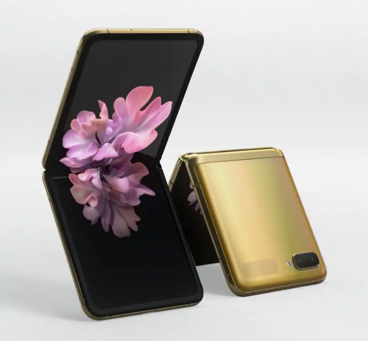

Samsung Galaxy Z Flip
Technical SpecsProcessor : Qualcomm Snapdragon 855+
OS : Android 10
RAM : 8GB
Cores : 8
Storage Internal : 256GB
External : None
Battery : 3300Mah
ScreenSize : 6.7 inch, 1.05 inch front display
AMOLED : Yes
HDR : HDR10+
Resolution : 2636 x 1080 pixels
CameraFront : 10 MP
Back : 12 MP wide angle, 12MP ultra wide lens
Video : upto 4k 30fps
Buy NowPrice : $1499
Amazon :
Buy
Review
After the not-so-successful launch of the first foldable phone, Samsung has tried again with its Galaxy Z Flip. This time the phone folds vertically rather than the previous one, which folds horizontally. This phone is a successor to the Samsung Galaxy Fold. The Galaxy Z Flip is an interesting futuristic phone which folds inward to make it a compact phone. The specs of this phone are upto par with other regular android smartphones but with the twist or "Fold". The Galaxy Z Flip flips inward like an old flip-phone from the 2000's which brings back the memories. The Flip is quipped with the latest hardware, camera and the usual Samsung design of colorful glass and metal body. There are 3 cameras and 2 screens in this phone. The front screen is accessible when the phone is folded, this screen is a small 1.05 inch OLED screen which shows notifications and some other details too. All in all, this $1500 android phone is not for all, but it is for the people who want something different, something to remind them of the past with today's great features and performance. Check out the Samsung Galaxy Z Flip in the link below.
Amazon Link: View